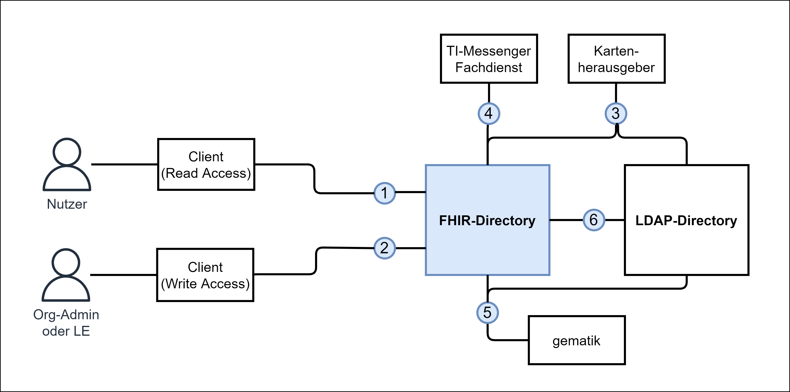
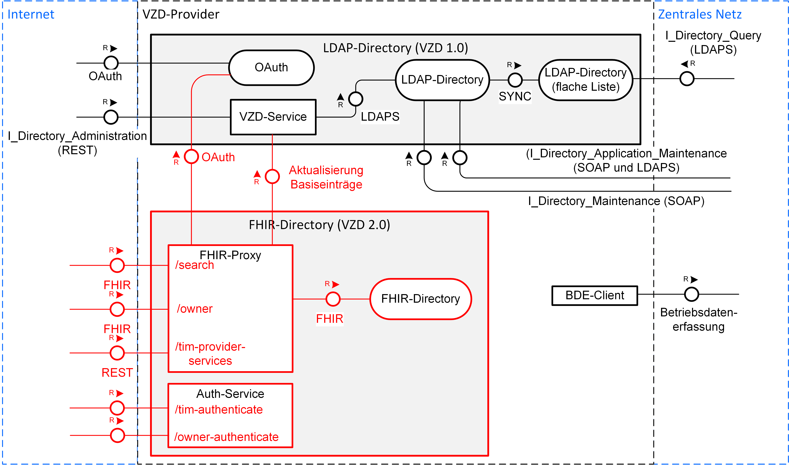
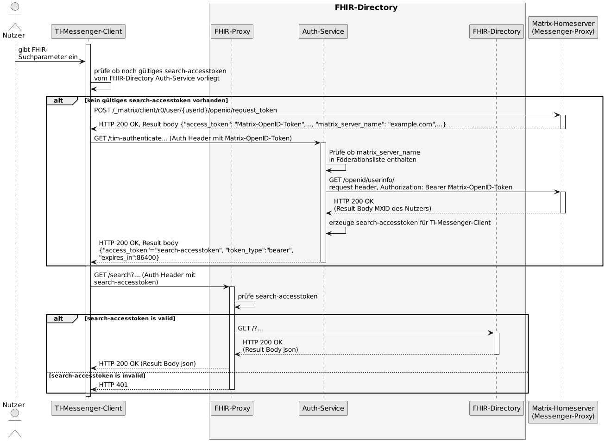
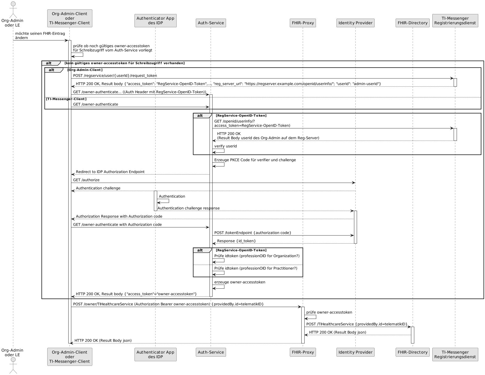
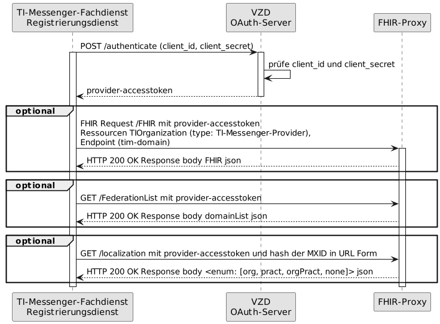
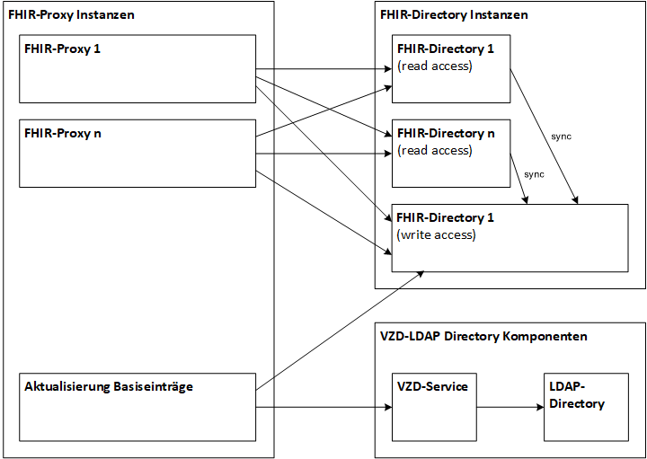

Elektronische Gesundheitskarte und Telematikinfrastruktur
Spezifikation
Verzeichnisdienst FHIR-Directory
| Version |
1.2.0 |
| Revision |
567556 |
| Stand |
12.12.2022 |
| Status |
freigegeben |
| Klassifizierung |
öffentlich |
| Referenzierung |
gemSpec_VZD_FHIR_Directory |
Dokumentinformationen
Änderungen zur Vorversion
Anpassungen des vorliegenden Dokumentes im Vergleich zur Vorversion können Sie der nachfolgenden Tabelle entnehmen.
Dokumentenhistorie
| Version |
Stand |
Kap./ Seite |
Grund der Änderung, besondere Hinweise |
Bearbeitung |
| 1.0.0 |
01.10.2021 |
|
Erstversion des Dokumentes |
gematik |
| 1.1.0 |
29.07.2022 |
|
Fortschreibung und insbesondere Anpassungen gemäß TI-Messenger-Spezifikation Version 1.1.0 |
gematik |
| 1.2.0 |
12.12.2022 |
4.2.4
4.2.3
4.3.1
|
Fachliche Beschreibung Operation whereIs ergänzt - C_11233
Aufbau der Föderationsliste aktualisiert - ANFTIM-185
Sicherheits- und Datenschutzanforderungen ergänzt |
gematik |
Inhaltsverzeichnis
1 Einordnung des Dokumentes
Dieses Dokument beschreibt das FHIR-Directory des Verzeichnisdienstes der TI. Die Spezifikation umfasst Schnittstellen zum Abruf von Informationen der im FHIR-Directory eingetragenen Organization-FHIR-Ressourcen und der Practitioner-FHIR-Ressourcen durch Clientsysteme sowie Schnittstellen und Prozesse zur Pflege der Informationen innerhalb des VZD-FHIR-Directories.
1.1 Zielsetzung
Die Spezifikation soll die Entwicklung und den Betrieb eines VZD-FHIR-Directories für die Telematikinfrastruktur unterstützen, indem die funktionalen und nicht-funktionalen Anforderungen sowie die Sicherheits-Anforderungen an den Dienst festgelegt werden.
1.2 Zielgruppe
Das Dokument richtet sich zwecks der Realisierung an den Hersteller des VZD-FHIR-Directories sowie an den Anbieter, welcher dieses Produkt betreibt [gemKPT_Betr]. Alle Hersteller und Anbieter von TI-Anwendungen, die das VZD-FHIR-Directory nutzen, müssen dieses Dokument ebenso berücksichtigen. Gleichfalls ist das Dokument auch für die Nutzer relevant, welche die Daten im VZD-FHIR-Directory eintragen, abfragen, ändern und löschen wollen.
1.3 Geltungsbereich
Dieses Dokument enthält normative Festlegungen zur Telematikinfrastruktur des deutschen Gesundheitswesens. Der Gültigkeitszeitraum der vorliegenden Version und deren Anwendung in Zulassungs- oder Abnahmeverfahren wird durch die gematik GmbH in gesonderten Dokumenten (z. B. gemPTV_ATV_Festlegungen, Produkttypsteckbrief, Anbietertypsteckbrief u.a.) oder Webplattformen (z. B. gitHub u.a.) festgelegt und bekanntgegeben.
Schutzrechts-/Patentrechtshinweis
Die nachfolgende Spezifikation ist von der gematik allein unter technischen Gesichtspunkten erstellt worden. Im Einzelfall kann nicht ausgeschlossen werden, dass die Implementierung der Spezifikation in technische Schutzrechte Dritter eingreift. Es ist allein Sache des Anbieters oder Herstellers, durch geeignete Maßnahmen dafür Sorge zu tragen, dass von ihm aufgrund der Spezifikation angebotene Produkte und/oder Leistungen nicht gegen Schutzrechte Dritter verstoßen und sich ggf. die erforderlichen Erlaubnisse/Lizenzen von den betroffenen Schutzrechtsinhabern einzuholen. Die gematik GmbH übernimmt insofern keinerlei Gewährleistungen.
1.4 Abgrenzungen
Spezifiziert werden in dem Dokument nur die mit dem VZD-FHIR-Directory neu eingeführten Komponenten und Schnittstellen des Verzeichnisdienstes der TI. Das VZD-LDAP-Directory ist in [gemSpec_VZD] spezifiziert.
Benutzte Schnittstellen werden in der Spezifikation desjenigen Produkttypen beschrieben, der diese Schnittstelle bereitstellt. Auf die entsprechenden Dokumente wird referenziert (siehe auch Anhang, Kapitel ).
Die vollständige Anforderungslage für den Produkttyp ergibt sich aus weiteren Konzept- und Spezifikationsdokumenten, diese sind in dem Produkttypsteckbrief des Produkttyps VZD-FHIR-Directory verzeichnet.
1.5 Methodik
Die Spezifikation ist im Stil einer RFC-Spezifikation verfasst. Dies bedeutet:
- Der gesamte Text in der Spezifikation ist sowohl für den Hersteller des Produktes VZD-FHIR-Directory als auch für den betreibenden Anbieter entsprechend [gemKPT_Betr] verbindlich zu betrachten und gilt sowohl als Zulassungskriterium beim Produkt und Anbieter.
- Auch für technisch mit dem Produkt und Dienst verbundene Anwendungen ist dieses Dokument verbindlich. Gleichfalls für die Nutzer, welche zur Datenpflege im VZD-FHIR-Directory beitragen oder Daten abfragen.
- Die Verbindlichkeit SOLL durch die dem RFC 2119 [RFC2119] entsprechenden, in Großbuchstaben geschriebenen deutschen Schlüsselworte MUSS, DARF NICHT, SOLL, SOLL NICHT, KANN gekennzeichnet werden.
- Da in dem Beispielsatz „Eine leere Liste DARF NICHT ein Element besitzen.“ die Phrase „DARF NICHT“ semantisch irreführend wäre (wenn nicht ein, dann vielleicht zwei?), wird in diesem Dokument stattdessen „Eine leere Liste DARF KEIN Element besitzen.“ verwendet.
- Die Schlüsselworte KÖNNEN außerdem um Pronomen in Großbuchstaben ergänzt werden, wenn dies den Sprachfluss verbessert oder die Semantik verdeutlicht.
Anwendungsfälle und Akzeptanzkriterien als Ausdruck normativer Festlegungen werden als Grundlage für Erlangung der Zulassung durch Tests geprüft und nachgewiesen. Sie besitzen eine eindeutige, permanente ID, welche als Referenz verwendet werden SOLL. Die Tests werden gegen eine von der gematik gestellte Referenz-Implementierung durchgeführt.
Anwendungsfälle und Akzeptanzkriterien werden im Dokument wie folgt dargestellt:
<ID> - <Titel des Anwendungsfalles / Akzeptanzkriteriums>
Text / Beschreibung
[<=]
Die einzelnen Elemente beschreiben:
- ID: einen eindeutigen Identifier.
- Bei einem Anwendungsfall besteht der Identifier aus der Zeichenfolge 'AF_' gefolgt von einer Zahl,
- Der Identifier eines Akzeptanzkriteriums wird von System vergeben, z. B. die Zeichenfolge 'ML_' gefolgt von einer Zahl
- Titel des Anwendungsfalles / Akzeptanzkriteriums: Ein Titel, welcher zusammenfassend den Inhalt beschreibt
- Text / Beschreibung: Ausführliche Beschreibung des Inhalts, kann neben Text Tabellen, Abbildungen und Modelle enthalten
Dabei umfasst der Anwendungsfall bzw. das Akzeptanzkriterium sämtliche zwischen ID und Textmarke [<=] angeführten Inhalte.
Der für die Erlangung einer Zulassung notwendige Nachweis der Erfüllung des Anwendungsfalls wird in den jeweiligen Steckbriefen festgelegt, in denen jeweils der Anwendungsfall gelistet ist. Akzeptanzkriterien werden in der Regel nicht im Steckbrief gelistet.
Hinweis auf offene Punkte
2 Systemüberblick
Das VZD-FHIR-Directory ist eine Erweiterung des bisherigen Verzeichnisdienstes der TI. Im VZD-FHIR-Directory werden Einträge von Organisationen und Leistungserbringern gespeichert. Die VZD-LDAP-Directory Einträge werden in das VZD-FHIR-Verzeichnis synchronisiert. Bei diesem Vorgang erfolgt eine Umsetzung von der LDAP-Datenstruktur auf die Datenstruktur der FHIR-Ressourcen. Personeneinträge der Leistungserbringer werden auf die PractitionerDirectory-Ressource und Organisations-Einträge auf die OrganizationDirectory-Ressource abgebildet. Die synchronisierten Einträge bilden die Basis-Einträge, die durch die Besitzer um zusätzliche Daten ergänzt bzw. erweitert werden können. PractitionerDirectory und TIOrganization sind Profilierungen der FHIR-Ressourcen Practitioner und Organization. Die Anbieter von Fachanwendungen werden ebenfalls als TIOrganization-Einträge im FHIR-Directory eingetragen, um Daten der Fachanwendung zu dieser Organisation zuordnen zu können.
Der Besitzer einer Telematik-ID erhält das Recht, seinen Eintrag zu erweitern (um z. B. Unterstrukturen für eine Organisation einzutragen) und Fachdaten zu ergänzen (z. B. TI-Messenger-Adressen). Die von den Kartenherausgebern eingetragenen Daten dürfen durch die Besitzer nicht verändert werden. Zusätzliche FHIR-Ressourcen (wie z. B. Location und HealthcareService) können durch die Besitzer ergänzt werden, um den Komfort bei der Suche nach Einträgen zu erhöhen.
Alle vom VZD-FHIR-Directory bereitgestellten Schnittstellen sind über das Internet erreichbar und TLS-gesichert. Die Authentisierung erfolgt mit:
- OpenID Connect Authorization Code Flow für Schreibzugriffe der Besitzer von Einträgen
- OAuth2 Client Credential Flow für Schreibzugriffe der Fachdienste
- Matrix-OpenID-Token für Lesezugriffe von TI-Messenger-Nutzern
Eine Nutzung der Schnittstellen des VZD-FHIR-Directory ohne Authentisierung der Nutzer MUSS durch das VZD-FHIR-Directory verhindert werden.
Als erste Anwendung wird der TI-Messenger-Dienst das VZD-FHIR-Directory nutzen.

Abbildung 1: Systemüberblick VZD-FHIR-Directory
Das FHIR-Directory ist eine Implementierung der FHIR-Spezifikation (http://hl7.org/fhir/summary.html ).
2.1 Nutzer und Rollen
Tabelle 1: Nutzer und Rollen
| Nutzer und Rolle |
Beschreibung |
| Nutzer |
Alle Nutzer können im FHIR-Directory über die Schnittstelle (1) nach Einträgen im Organisationsverzeichnis und im Personenverzeichnis suchen. |
| Org-Admin oder LE |
Administratoren der Organisationen und LE können im FHIR-Directory über die Schnittstelle (2) ihren Eintrag im Organisationsverzeichnis ändern und um zusätzliche Ressourcen erweitern.
|
Tabelle 2: Kommunikationsbeziehungen zu IT-Systemen
| IT-Systeme |
Beschreibung |
| Kartenherausgeber |
Die Kartenherausgeber nutzen die Schnittstelle (3), um die Einträge ihrer Mitglieder im LDAP-Directory und zukünftig im FHIR-Directory zu pflegen. |
| TI-Messenger-Anbieter |
Die TI-Messenger-Anbieter nutzen die Schnittstelle (4), um die Föderationsliste des TI-Messengers abzufragen und um die Domains der von ihnen betriebenen Messenger-Services als Teil der TI-Messenger Föderation zu verwalten. |
| gematik |
Die gematik kann über die Schnittstelle (5) lesend auf die Einträge im FHIR-Directory und im LDAP-Directory zugreifen, um die Daten-Qualität der Einträge zu prüfen und um Fehler zu analysieren. |
| LDAP-Directory |
Die Schnittstelle (6) zwischen FHIR-Directory und LDAP-Directory wird vom Verzeichnisdienst genutzt, um die Einträge zu synchronisieren. |
Alle Schnittstellen mit Ausnahme (6) sind über das Internet erreichbar. Die Schnittstellen stellen folgende Funktionen bereit:
- Für Nutzer gibt es eine Schnittstelle zur Suche nach Einträgen im FHIR-Directory Organisationsverzeichnis und Personenverzeichnis. Die Schnittstelle kann nur nach erfolgreicher Authentisierung genutzt werden. Alle TI-Messenger Nutzer können sich authentisieren und bekommen vom FHIR-Directory ein Accesstoken ausgestellt, das für die Suchanfragen verwendet wird. Die Suche ermöglicht es, komfortabel nach Volltext oder nach bestimmten Werten der einzelnen Attribute über die verlinkten Ressourcen zu suchen. Gefundene Ressourcen werden in einem Bundle von FHIR Ressourcen zurück geliefert. Das Datenformat ist json.
- Für Administratoren der Organisationen des Gesundheitswesens und für LE gibt es eine Schnittstelle zur Änderung ihres Eintrags im Organisationsverzeichnis. Zur Nutzung der Schnittstelle ist eine Authentifizierung mit OIDC Authorization Code Flow erforderlich. Über diese Schnittstelle kann im Organisationsverzeichnis der eigene Eintrag der Organisation über eine Verlinkung um zusätzliche Einträge erweitert werden. TI-Messenger Nutzer, die auch LE sind, können diese Schnittstelle nutzen, um ihre TI-Messenger-Adresse in ihrem Eintrag im Personenverzeichnis zu speichern, sodass sie von anderen LE gefunden werden können. Auch hier erfolgt die Authentifizierung über OIDC. Das FHIR-Datenformat ist json.
- Für Kartenherausgeber gibt es die Schnittstelle I_Directory_Administration, um Einträge im LDAP-Directory anzulegen und zu pflegen. Das Datenformat ist json und ist in der OpenAPI-yaml-Datei DirectoryAdministration.yaml festgelegt. Zukünftig ist vorgesehen, dass die Kartenherausgeber auch direkt die Schnittstelle zum FHIR-Directory nutzen können. Dann ist das Datenformat FHIR in der Ausprägung JSON. Die Authentifizierung der Kartenherausgeber erfolgt mit OAuth Client Credential Flow.
- TI-Messenger-Fachdienste pflegen im FHIR-Directory für die von ihnen angebotenen Messenger-Services die TI-Messenger-Domänen. Zusätzlich können die TI-Messenger-Anbieter die Föderationsliste abfragen. Sie beinhaltet alle an der Föderation des TI-Messengers beteiligte Domains. Um die Kommunikationskontrolle zu ermöglichen, fragen TI-Messenger-Fachdienste auch ab, in welchem Verzeichnis (Personen- oder Organisationsverzeichnis) sich die Hashes von TI-Messenger-Adressen befinden. Die Authentifizierung der TI-Messenger-Fachdienste erfolgt mit OAuth Client Credential Flow.
- Die gematik hat Schnittstellen, um die Daten-Qualität der Einträge zu prüfen. Dazu wird die Schnittstelle der Kartenherausgeber genutzt. Die gematik hat aber nur Leserechte.
- Die Einträge im LDAP-Directory werden in das FHIR-Directory Organisations- und Personenverzeichnis synchronisiert. Es handelt sich um eine interne Schnittstelle des Verzeichnisdienstes der TI.
2.2 Nachbarsysteme
Die Nachbarsysteme des VZD-FHIR-Directory sind Client- und Serverkomponenten des TI-Messenger-Dienstes, das VZD-LDAP-Directory, die IDPs aus der TI-IDP-Föderation und die Betriebsdatenerfassung der gematik.
ML-123876
Es MÜSSEN alle Anwendungsfälle des VZD-FHIR-Directories erfolgreich gegen die Referenzimplementierung der Nachbarsysteme getestet sein.
<=
3 Zerlegung des Produkttyps
Die folgende Abbildung zeigt die Teilkomponenten des bisherigen VZD-LDAP-Directory und die rot dargestellten neuen Komponenten des VZD-FHIR-Directory.

Abbildung 2: Zerlegung des VZD
Das VZD-FHIR-Directory besteht aus den Komponenten FHIR-Proxy und FHIR-Directory sowie Auth-Service.
Die vom VZD-FHIR-Directory zu liefernden Rohdaten zur Ermittlung der Auslastung und Performance werden in den bereits vorhandenen Betriebsdaten-Erfassungs-Client (BDE-Client) des Verzeichnisdienstes integriert.
4 Funktionsmerkmale
In diesem Kapitel werden die Komponenten des VZD-FHIR-Directories beschrieben.
Das FHIR-Directory stellt folgende Schnittstellen bereit:
- FHIRDirectoryAuthorizationService
Stellt Accesstokens zum Zugriff auf FHIRDirectory APIs aus. Es wird zukünftig zum anwendunsspezifischen Policy Decision Point (PDP) ausgebaut.
Hierbei werden die zwei folgenden REST-Schnittstellen
- /tim-authenticate und
- /owner-authenticate
verwendet. Die Schnittstelle /tim-authenticate erwartet ein Matrix-OpenID-Token, wohingegen bei der Schnittstelle /owner-authenticate ein ID_TOKEN übergeben werden muss.
Die REST-Schnittstelle /search ermöglicht die Suche nach Personen und Institutionen.
Genutzt wird die Standard FHIR Suchoperation https://build.fhir.org/search.html
Zur Nutzung der Suchoperation muss ein entsprechendes Accesstoken vom FHIRDirectoryAuthorizationService vorliegen.
- FHIRDirectoryTIMProviderAPI
Die REST-Schnittstelle /tim-provider-services ermöglichet betriebliche Prozesse für TI-Messenger Provider insb. Föderation.
Diese REST Schnittstelle wird hier definiert: https://github.com/gematik/api-vzd/ unter src/openapi/I_VZD_TIM_Provider_Services.yaml
Die REST-Schnittstelle /owner ermöglich die Anpassung der Einträge durch Identitätseigentümer zzgl. Autoritativer Daten der Kartenherausgeber.
Genutzt werden die Standard FHIR Operationen https://build.fhir.org/http.html mit der Einschränkung auf eigene Resourcen und die autoritativer Daten der Kartenherausgeber.
Zur Nutzung dieser Operation muss ein entsprechendes Owner-Accesstokens vom FHIRDirectoryAuthorizationService vorliegen.
- ProviderAuthorizationService
Ermöglicht Authentisierung und Autorisierung der TI-Anbieter zum Zugriff auf FHIR Directory. Am Anfang nur TI-Messenger Anbieter, später auch KIM-Anbieter und zukünftige Anbieter.
Bei Aufruf der REST-Schnittstelle /tim-provider-services wird ein Accesstoken (provider-accesstoken) benötigt. Hierfür muss sich der Client bei dem ProviderAuthorizationService des VZD-FHIR-Directory mittels OAuth2 Client Credentials Flow authentisieren. Zuvor MUSS der Client beim VZD-Anbieter Client-Credentials beantragen.
Geplante FHIR-Directory Schnittstellen in zukünftigen Releases:
- FHIRDirectorySearchTI API
Geplante Schnittstelle für die Suche der Einträge ohne Authentisierung im geschlossenen Netz der TI (TI-Anbindung erforderlich).
Geplante Schnittstelle für die Administration der Daten im FHIR Verzeichnisdienst als Nachfolger für REST Pflegeschnittstelle (DirectoryAdministration).
4.1 FHIR-Directory
Das FHIR-Directory ist eine Implementierung der HL7-FHIR-Spezifikation Release 4.0.1 (https://www.hl7.org/fhir/http.html ).
Das FHIR-Directory ist nur über den FHIR-Proxy erreichbar.
4.1.1 Datenmodell
Es werden die FHIR-Ressourcen gemäß folgender Tabelle verwendet.
Alle Änderungen und Erweiterungen der FHIR Ressourcen sind in https://simplifier.net/vzd-fhir-directory veröffentlicht.
Tabelle 3: VZD-FHIR-Directory, FHIR-Ressourcen
ML-123880
Nur die in Tabelle "VZD-FHIR-Directory, FHIR-Ressourcen" angegebenen Ressourcen dürfen im VZD-FHIR-Directory erzeugt werden. <=
4.1.2 Mapping von LDAP auf FHIR-Ressourcen
Die OrganizationDirectory- und PractitionerDirectory-Basiseinträge werden durch den FHIR Proxy mit den Daten aus dem VZD-LDAP-Directory initial erzeugt und anschließend fortlaufend aktualisiert. Die synchronisierten Daten können nicht durch die Besitzer (Leistungserbringer und Organisationen) geändert werden.
Die Daten aus dem VZD-LDAP-Directory werden wie folgt den FHIR-Ressourcen zugeordnet: https://github.com/gematik/api-vzd/blob/master/docs/LDAP2FHIR_Sync.adoc.
4.1.3 FHIR RESTful API
Die Operationen der FHIR-Schnittstelle sind durch die FHIR-Spezifikation festgelegt (https://www.hl7.org/fhir/http.html ).
Die Anzahl der mittels /search Operation gefundenen und zurückgegebenen Einträge wird initial auf 100 begrenzt. Dieser Wert MUSS konfigurierbar sein. Die zurückgegebenen Einträge werden in einem FHIR-Ressource-Bundle zusammengefasst. Im Attribut Bundle.total MUSS die Gesamtanzahl der gefundenen Einträge (total number of matches) zurückgegeben werden.
Zusätzlich MUSS konfigurierbar sein, ob Paging eingesetzt wird und wie groß die page_size ist. Paging ist initial eingeschaltet mit page_size = 10. Wenn eine Suche mehr Treffer enthält, als in page_size angegeben, dann enthält die Response ein bundle mit den gefundenen Einträgen gemäß page_size und einen Link auf die nächste page.
4.2 FHIR-Proxy
4.2.1 Schnittstellen
4.2.1.1 TLS-Verbindungsaufbau
Der FHIR-Proxy MUSS sich beim TLS-Verbindungsaufbau an den Endpunkten gegenüber Clients mit einem Extended Validation TLS-Zertifikat eines Herausgebers gemäß [CAB-Forum] authentisieren. Das Zertifikat MUSS an die Schnittstelle des Eingangspunkts für Clientsysteme gebunden werden, damit Clientsysteme beim TLS-Verbindungsaufbau eine vereinfachte Zertifikatsprüfung mit TLS-Standardbibliotheken durchführen können.
4.2.1.2 FHIR Schnittstelle für TI-Messenger-Nutzer FHIRDirectorySearchAPI
Endpunkte für die Suche von Einträgen im VZD-FHIR-Directory durch TI-Messenger-Clients
In der Produktionsumgebung ist die URL: https://fhir-directory.vzd.ti-dienste.de/search
In der Referenzumgebung ist die URL: https://fhir-directory-ref.vzd.ti-dienste.de/search
In der Testumgebung ist die URL: https://fhir-directory-test.vzd.ti-dienste.de/search
Authentisierung
Um die Schnittstelle nutzen zu können, MÜSSEN sich die Clients mit einem gültigen Token authentisieren, das von einem Matrix-Homeserver aus der TI-Messenger-Föderation ausgestellt wurde. Im Folgenden werden diese Accesstoken Matrix-OpenID-Token genannt. Nach erfolgreicher Prüfung des Matrix-OpenID-Token stellt der FHIR-Proxy dem TI-Messenger-Client ein neues OAuth Accesstoken aus (tim-accesstoken), das für Suchanfragen des TI-Messenger-Clients verwendet wird. Die Gültigkeitsdauer ist 24 Stunden.
Das Accesstoken enthält folgende Attribute:
Das Attribut "iss" enthält die URL des Endpunktes für die Authentisierung in der jeweiligen Umgebung RU, TU oder PU.
Das Attribut "aud" enthält die URL des Endpunktes in der jeweiligen Umgebung RU, TU oder PU.
Endpunkte für die Authentisierung
In der Produktionsumgebung ist die URL: https://fhir-directory.vzd.ti-dienste.de/tim-authenticate
In der Referenzumgebung ist die URL: https://fhir-directory-ref.vzd.ti-dienste.de/tim-authenticate
In der Testumgebung ist die URL: https://fhir-directory-test.vzd.ti-dienste.de/tim-authenticate
Operationen
Die FHIR Operationen für die Suche nach Einträgen im VZD-FHIR-Directory sind in der HL7 FHIR Spezifikation (https://www.hl7.org/fhir/http.html ) festgelegt.
4.2.1.3 FHIR-Schnittstelle für Besitzer FHIRDirectoryOwnerAPI
Die Schnittstelle ermöglicht es den Besitzern einer Telematik-ID, ihren Eintrag im VZD-FHIR-Directory zu ändern. Im bei der Authentifizierung verwendeten Accesstoken ist die Telematik-ID des Nutzers enthalten. Nur der Eintrag (PractitionerDirectory oder OrganizationDirectory) mit der eigenen Telematik-ID darf verändert werden. Dabei dürfen nur die Attribute verändert werden, die nicht vom VZD-LDAP-Directory synchronisiert werden.
Endpunkte für das Ändern von eigenen Einträgen im VZD-FHIR-Directory durch TI-Messenger Clients und Org-Admin-Clients
In der Produktionsumgebung ist die URL: https://fhir-directory.vzd.ti-dienste.de/owner
In der Referenzumgebung ist die URL: https://fhir-directory-ref.vzd.ti-dienste.de/owner
In der Testumgebung ist die URL: https://fhir-directory-test.vzd.ti-dienste.de/owner
Authentisierung
Um die Schnittstelle nutzen zu können, MÜSSEN sich die Clients mit einem gültigen Accesstoken authentisieren, das vom FHIR-Proxy ausgestellt wurde. Wenn kein gültiges Accesstoken im Client vorhanden ist, dann muss sich der Client an einem IDP der TI-IDP-Föderation authentisieren.
Nur der eigene Eintrag mit einem Identifier passend zur Telematik-ID aus dem Accesstoken KANN bearbeitet werden. Für einen eigenen OrganizationDirectory-Eintrag KÖNNEN weitere OrganizationDirectory-Einträge erstellt und mit dem eigenen Eintrag verlinkt werden.
Das Accesstoken enthält folgende Attribute:
Das Attribut "iss" enthält die URL des Endpunktes für die Authentisierung in der jeweiligen Umgebung RU, TU oder PU.
Das Attribut "aud" enthält die URL des Endpunktes in der jeweiligen Umgebung RU, TU oder PU.
Endpunkte für die Authentisierung
In der Produktionsumgebung ist die URL: https://fhir-directory.vzd.ti-dienste.de/owner-authenticate
In der Referenzumgebung ist die URL: https://vzd-fhir-directory-ref.vzd.ti-dienste.de/owner-authenticate
In der Testumgebung ist die URL: https://vzd-fhir-directory-test.vzd.ti-dienste.de/owner-authenticate
Operationen
Die FHIR-Operationen für das Ändern von eigenen Einträgen im VZD-FHIR-Directory sind in der HL7-FHIR-Spezifikation (https://www.hl7.org/fhir/http.html ) festgelegt.
4.2.1.4 Schnittstelle FHIRDirectoryTIMProviderAPI (I_VZD_TIM_Provider_Services.yaml)
Endpunkte
In der Produktionsumgebung ist die URL: https://fhir-directory.vzd.ti-dienste.de/tim-provider-services
In der Referenzumgebung ist die URL: https://fhir-directory-ref.vzd.ti-dienste.de/tim-provider-services
In der Testumgebung ist die URL: https://fhir-directory-test.vzd.ti-dienste.de/tim-provider-services
Authentisierung
Um die Schnittstelle nutzen zu können, muss sich der Registrierungsdienst des TI-Messenger-Anbieters mit einem Accesstoken authentisieren, das vom OAuth-Server des VZD-Anbieters ausgestellt wurde. Das Accesstoken hat eine Gültigkeitsdauer von 30 Minuten.
Das Accesstoken enthält folgende Attribute:
Das Attribut "iss" enthält die URL des Endpunktes für die Authentisierung in der jeweiligen Umgebung RU, TU oder PU.
Das Attribut "aud" enthält die URL des Endpunktes in der jeweiligen Umgebung RU, TU oder PU.
Endpunkte für die Authentisierung
In der Produktionsumgebung ist die URL: https://oauth.vzd.ti-dienste.de/authenticate
In der Referenzumgebung ist die URL: https://ru-oauth-test.vzd.ti-dienste.de/authenticate
In der Testumgebung ist die URL: https://tu-oauth-test.vzd.ti-dienste.de/authenticate
Registrierung
Für den Zugriff auf den OAuth-Server MUSS der TI-Messenger-Anbieter für seinen Registrierungsdienst beim VZD-Anbieter Client-Credentials beantragen. Die Beantragung erfolgt über einen genehmigungspflichtigen Service-Request im TI-ITSM-System.
Die Registrierung und Vergabe der Credentials erfolgt dabei auf Anbieterebene.
Der Antrag MUSS folgende Informationen enthalten, um weiter bearbeitet werden zu können:
- Angaben zur Rolle (hier TI-Messenger-Anbieter) und Organisation des Antragstellers, Erläuterung der Berechtigung und des Bedarfs (zur Verifikation notwendig)
- Kontaktdaten zu Ansprechpartnern beim Antragsteller (2 Personen) inkl. Telefonnummer, E-Mail-Adresse, Anschrift
- Angabe der Betriebsumgebung (RU/PU)
- E-Mail-Adresse und dazugehöriges S/MIME-Zertifikat (in einer ZIP-Datei als Anhang), an welche die Zugangsdaten verschlüsselt übermittelt werden können (kostenlose Zertifikate sind z. B. beim DGN erhältlich)
- falls bereits vorhanden, eine entsprechende Ticketnummer
- nur bei Deregistrierung durch den Antragsteller: vorab vergebene Client-ID
- gewünschte Bezeichnung im OAuth2-Server ID_TOKEN claim scope.
Nach Prüfung der Angaben, werden die Zugangsdaten direkt vom Anbieter Zentrale Plattformdienste (vgl. gemKPT_Betr) an die gewünschte E-Mail-Adresse übermittelt.
Es ist zu beachten, dass dieser Prozess ausschließlich für Neuanlagen und Löschungen vorgesehen ist. Änderungen oder der Neuversand von Zugangsdaten können nicht bearbeitet werden.
Operationen
Die Schnittstelle ist in I_VZD_TIM_Provider_Services.yaml als OpenAPI RESTful Service spezifiziert.
https://github.com/gematik/api-vzd/blob/main/src/openapi/I_VZD_TIM_Provider_Services.yaml
Tabelle 4: Tab_VZD_TIM-Provider-Services_Operations
| Operation |
Beschreibung |
GET /
"getInfo" |
Mit dieser Operation können Metadaten (insbesondere auch die Version und das verwendete yaml-File) dieser Schnittstelle abgefragt werden. |
| GET /FederationList/federationList.json |
Mit dieser Operation wird die Liste der an der TI-Messenger-Föderation beteiligten Matrix-Domainnamen abgefragt (Föderationsliste). |
GET /localization
"whereIs" |
Gibt für den übergebenen Hash einer MXID den Teil des Directories zurück, in dem die MXID enthalten ist. |
POST /federation
"addTiMessengerDomain" |
Eine Domaine zur Föderation hinzufügen. |
GET /federation
"getTiMessengerDomain" |
Lesen einer oder aller eigener Domains. |
PUT /federation
"updateTiMessengerDomain" |
Aktualisierung einer Domaine. |
DELETE /federation
"deleteTiMessengerDomain" |
Löschen einer Domaine. |
GET /federationCheck
"checkTiMessengerDomains" |
Prüft, ob alle eigenen Domains (durch Token ermittelbar) zu aktiven Organisationen gehören. Gibt die eigenen Domains zurück, die zu inaktiven Organisationen gehören. |
Im Attribut "sub" des Accesstokens ist die client_id des TI-Messenger-Registrierungsdienstes enthalten. Wenn der TI-Messenger-Registrierungsdienst einen OrganizationDirectory-Eintrag erzeugt, dann MUSS die client_id im Element alias des Eintrags enthalten sein.
4.2.2 Aktualisierung der Basiseinträge
Der FHIR-Proxy aktualisiert regelmäßig die Basiseinträge im VZD-FHIR-Directory mit den geänderten Daten des VZD-LDAP-Directories (siehe AF_10047 Einträge mit dem VZD-LDAP-Directory abgleichen). Das Intervall für die regelmäßige Aktualisierung MUSS konfigurierbar sein und wird initial auf 2 Stunden festgelegt.
Es MUSS (analog dem Background-Sync-Verfahren in die LDAP flache Liste) eine weitere Synchronisation mittels PUSH in den FHIR VZD möglich sein.
Zukünftig ist vorgesehen, dass Kartenherausgeber direkt die Basiseinträge ihrer Mitglieder im VZD-FHIR-Directory über eine FHIR-Schnittstelle verwalten können.
4.2.3 Erzeugung und Bereitstellung der Föderationsliste
Die Föderationsliste MUSS bei Änderung der Domains durch TI-Messenger-Anbieter neu erzeugt und zum Download über die Schnittstelle I_VZD_TIM_Provider_Services bereitgestellt werden.
Die Föderationsliste hat folgende Struktur:
Die Föderationsliste MUSS mit einer JWS gemäß RFC7515 signiert werden. Der zu verwendende Signatur-Algorithmus MUSS "ES256" sein. Dazu MUSS ein Signatur-Zertifikat der Komponenten-PKI der TI (C.FD.SIG) verwendet werden. Das Signatur-Zertifikat und das ausstellende CA-Zertifikat MÜSSEN im Signatur-Header enthalten sein.
Der Signatur-Header hat folgende Struktur:
Die signierte Föderationsliste hat gemäß RFC7515 folgende Struktur:
ML-123677
Im Sicherheitsgutachten des VZD-FHIR-Directories sind geeignete Maßnahmen gegen die Manipulation der Föderationsliste beschrieben. <=
4.2.4 Lokalisierung einer MXID (Operation whereIs)
Die Operation prüft, in welchem Teil des Directorys (Organisation, Person) eine MXID enthalten ist, und gibt das Prüfergebnis zurück. Übergeben wird die MXID an die Operation in URL Form.
Damit diese Operation performant ist, darf bei Aufruf der Operation nicht der gesamte FHIR Datenbestand durchsucht werden. Dies kann z. B. durch eine Performance-optimierte Tabelle mit den MXIDs und dazugehörigem Ergebnis gewährleistet werden.
Die Authentisierung des Clients erfolgt für Operation whereIs entsprechend Kapitel .
Der FHIR-Proxy MUSS die Lokalisierung einer MXID über Operation whereIs performant bereitstellen. Dazu MUSS der FHIR-Proxy bei jeder Änderung an den Endpoint-Einträgen (der MXID darin) die benötigten Daten für die performante Antwort der whereIs Operation aktualisieren. Der FHIR-Proxy DARF NICHT die originalen FHIR-Daten für die Ausführung der whereIs Operation durchsuchen.
4.3 Übergreifende Vorgaben
4.3.1 Sicherheit und Datenschutz
Die folgenden Vorgaben gelten auch für den FHIR-VZD.
TIP1-A_5546-01
Der Anbieter des VZD MUSS die Integrität und Authentizität der im VZD gespeicherten Daten gemäß den Richtlinien des Bundesamtes für Sicherheit in der Informationstechnik für allgemeine Verzeichnisdienste, [BSI APP.2.1], implementieren. <=
TIP1-A_5548
Der VZD MUSS Änderungen der Verzeichnisdiensteinträge protokollieren und muss sie 6 Monate zur Verfügung halten.
<=
6 Monate ist die maximale Nachweistiefe, ohne in den Bereich der Vorratsdatenspeicherung zu kommen.
TIP1-A_5549
Der VZD DARF Suchanfragen NICHT speichern oder protokollieren.
<=
TIP1-A_5550
Der VZD DARF von gelöschten Daten KEINE Kopien speichern.
<=
TIP1-A_5551
Der Anbieter des VZD MUSS den Dienst gegen Datenverlust absichern.
<=
TIP1-A_5552
Der VZD MUSS die Ergebnisliste einer Suchanfrage auf 100 Suchergebnisse begrenzen.
<=
TIP1-A_5553
Der VZD MUSS seine privaten Schlüssel sicher speichern und ihr Auslesen verhindern um Manipulationen zu verhindern.
<=
TIP1-A_5554-01
Der VZD MUSS die Integrität und Authentizität der gespeicherten Registrierungsdaten gewährleisten. <=
TIP1-A_5556
Der VZD MUSS lokal und remote erkannte Fehler in seinem lokalen Speicher protokollieren.
<=
TIP1-A_5558
Der VZD MUSS die Inhalte der TSL in einem lokalen Trust Store sicher speichern und für X.509-Zertifikatsprüfungen lokal zugreifbar halten.
<=
4.3.2 Betrieb
Das VZD-FHIR-Directory wird betrieblich als eine weitere Servicekomponente im Sinne der Weiterentwicklung des Verzeichnisdienstes betrachtet. Diese Servicekomponente kann, bis auf die Schnittstellen, unabhängig vom VZD-LDAP-Directory entwickelt und deployt werden. Aus Nutzersicht ist weniger die interne, logische Struktur der Verzeichnisdienste relevant, sondern die Verfügbarkeit der Schnittstellen und die im Verzeichnis enthaltenen Daten.
Das VZD-FHIR-Directory MUSS die Bearbeitungszeitvorgaben unter Last aus Tab_VZD_FHIR_Perf unter der für alle Funktionen parallel anliegenden Spitzenlast erfüllen.
Tabelle 5: Tab_VZD_FHIR_Perf
| Schnittstellenoperation |
Lastvorgaben
Spitzenlast
[1/sec] |
Bearbeitungs-zeitvorgaben
Mittelwert
[msec] |
Bearbeitungs-zeitvorgaben
99%-Quantil
[msec] |
| FHIR Schnittstelle für TI-Messenger-Nutzer (/search) |
1000 |
1000 |
1250 |
| FHIR-Schnittstelle für Besitzer (/owner) |
20 |
1000 |
1250 |
| Schnittstelle I_VZD_TIM_Provider_Services (/tim-provider-services) |
|
|
|
| - getFederationList |
1 |
1000 |
1250 |
| - whereIs |
50 |
1000 |
1250 |
| - addTiMessengerDomain |
1 |
1000 |
1250 |
| - getTiMessengerDomain |
1 |
1000 |
1250 |
| - updateTiMessengerDomain |
1 |
1000 |
1250 |
| - deleteTiMessengerDomain |
1 |
1000 |
1250 |
| - checkTiMessengerDomains |
1 |
1000 |
1250 |
5 Anwendungsfälle
5.1 TI-Messenger-Nutzer sucht Einträge im FHIR-Directory
AF_10036
| Attribute |
Bemerkung |
| Beschreibung |
Nutzer können im FHIR-Directory nach HealthcareServiceDirectory- und PractitionerRoleDirectory-Einträgen suchen. Dazu ist eine Authentisierung am Auth-Service erforderlich. Hier ist die Authentisierung mit TI-Messenger-Clients beschrieben.
Wenn im TI-Messenger-Client kein gültiges tim-accesstoken vom Auth-Service vorhanden ist, wird vom TI-Messenger-Client am Matrix-Homeserver ein Matrix-OpenID-Token abgefragt und mit dem Matrix-OpenID-Token im Auth-Header der Endpunkt /tim-authenticate des Auth-Services aufgerufen. Der Auth-Service prüft das vom TI-Messenger-Client übergebene Matrix-OpenID-Token. Dabei MUSS der im Matrix-OpenID-Token angegebene matrix_server_name in der TI-Messenger Föderationsliste enthalten sein. Der Auth-Service ruft am Matrix-Homeserver die Operation GET/openid/userinfo mit dem Matrix-OpenID-Token als Parameter auf und erhält in der Response die MXID des TI-Messenger-Nutzers. Damit ist die Authentisierung des Nutzers abgeschlossen. Der Auth-Service erstellt ein search-accesstoken und sendet es an den TI-Messenger-Client.
Der TI-Messenger-Client sendet ein GET Request gemäß FHIR-Spezifikation an den Endpunkt /search des FHIR-Proxy. Im Authentication Header ist das search-accesstoken enthalten.
Der GET Request gemäß FHIR-Spezifikation wird vom FHIR-Proxy an das FHIR-Directory per http-Forward weitergeleitet. Der FHIR-Proxy erhält vom FHIR-Directory eine Response mit den gefundenen Einträgen als json Daten.
Die Response wird an den TI-Messenger-Client gesendet. |
| Vorbedingung |
Der Nutzer ist an seinem Homeserver registriert. |
| Nachbedingung |
Der TI-Messenger-Client hat alle gefundenen Einträge empfangen. |

Abbildung 3: Sequence diagram /search
<=
Akzeptanzkriterien für den Anwendungsfall AF_10036 Nutzer sucht OrganizationDirectory- und PractitionerDirectory-Einträge im VZD-FHIR-Directory
ML-123485
Am Endpunkt /search des FHIR-Proxy darf die Authentifizierung nur für Requests erfolgreich sein, die ein gültiges search-accesstoken im Authentication Header enthalten, das vom Auth-Service ausgestellt wurde. <=
5.2 Eigentümer ändert seinen Eintrag im FHIR-Directory
AF_10037
| Attribute |
Bemerkung |
| Beschreibung |
Organisationen können ihren Eintrag im VZD-FHIR-Directory an die eigenen Strukturen anpassen. Leistungserbringer können z. B. die TI-Messenger-Adresse in ihrem Eintrag hinzufügen. Der Basiseintrag einer Organisation oder eines Leistungserbringers wird wie bisher durch die Kartenherausgeber erstellt. Die Organisation KANN eigene mit dem Basiseintrag verlinkte FHIR-Ressourcen erstellen, um die Struktur der Organisation abzubilden. Zum Beispiel können Krankenhäuser ihre Fachabteilungen als HealthcareService-Einträge abbilden, die mit dem Organization-Eintrag verlinkt sind.
Wenn der Org-Admin oder LE kein gültiges owner-accesstoken vom VZD-FHIR-Directory im Client vorliegt, muss die Authentisierung mittels OIDC an einem IDP der TI-IDP-Föderation erfolgen. Nach erfolgreicher Authentisierung ist die durch den IDP bestätigte Telematik-ID des Leistungserbringers oder der Organisation am Auth-Service bekannt. Für den Aufruf der FHIR-Operationen durch den Client stellt der Auth-Service dem Client ein owner-accesstoken aus, dass auch die Telematik-ID des LE oder der Organisation enthält.
|
| Vorbedingung |
Die Organisation oder der Leistungserbringer hat bereits einen Basiseintrag im VZD-FHIR-Directory.
Eine Authenticator-App des IDP steht zur Verfügung, mit der die Organisations-Identität oder die Leistungserbringer-Identität bei einem IDP der TI-IDP-Föderation bestätigt werden kann. |
| Fehlermeldungen |
|

Abbildung 4: Sequenzdiagramm VZD-FHIR-Directory Änderung von eigenen OrganizationDirectory- oder PractitionerDirectory-Einträgen
<=
Akzeptanzkriterien für den Anwendungsfall AF_10037 OrganizationDirectory-Einträge im VZD-FHIR-Directory ändern
ML-123873
Am Endpunkt /owner des FHIR-Proxy darf die Authentifizierung nur für Nutzer erfolgreich sein, die ein gültiges Accesstoken vom VZD-FHIR-Directory vorweisen.
<=
ML-123874
Im bei der Authentifizierung verwendeten Accesstoken ist die Telematik-ID des Nutzers enthalten. Nur der Eintrag (PractitionerDirectory oder OrganizationDirectory) mit der eigenen Telematik-ID darf verändert werden. Dabei dürfen nur die Attribute verändert werden, die nicht vom VZD-LDAP-Directory synchronisiert werden.
<=
ML-123482
Alle selbst durch den Besitzer angelegten FHIR-Einträge MÜSSEN mit dem eigenen Basiseintrag mittels partOf verlinkt sein. Wenn keine korrekte Verlinkung angegeben ist, dann MUSS der FHIR-Proxy das Erzeugen oder die Änderung des OrganizationDirectory-Eintrags mit der Fehlermeldung (HTTP 422 Unprocessable Entity) ablehnen. <=
5.3 Anwendungsfälle der TI-Messenger-Anbieter im VZD-FHIR-Directory
AF_10048
| Attribute |
Bemerkung |
| Beschreibung |
Für den Betrieb eines TI-Messenger-Fachdienstes ist es erforderlich, alle an der Föderation beteiligten Matrix-Domänen zu kennen, um nicht an der Föderation beteiligte Matrix-Domänen ausschließen zu können.
Die Domänen werden im VZD-FHIR-Directory in Endpoint-Einträgen gespeichert. Die Endpoint-Einträge eines TI-Messenger-Anbieters sind verlinkt mit seinem OrganizationDirectory-Eintrag. Der TI-Messenger-Anbieter verwaltet seine Einträge im VZD-FHIR-Directory selbst. Dazu beantragt der TI-Messenger-Anbieter für seinen Registrierungsdienst Client Credentials für die Nutzung der Schnittstelle I_VZD_TIM_Provider_Services. Mit den Credentials erhält der Registrierungsdienst vom VZD OAuth-Server ein Accesstoken, das zur Authentifizierung an der Schnittstelle genutzt wird. Nach erfolgreicher Authentisierung kann der Registrierungsdienst die FHIR-Operationen zur Verwaltung des eigenen OrganizationDirectory-Eintrags und der eigenen Endpoint-Einträge nutzen.
Um die Gesamtheit der an der Föderation beteiligten Matrix-Domainnamen zu erhalten, wird die Operation GET /FederationList aufgerufen. Optional KANN die bereits bekannte Version im Request angegeben werden. Als Ergebnis erhält der Registrierungsdienst eine Liste der Hashes der an der Föderation beteiligten Domainnamen oder keine Liste, falls keine neuere Version existiert. Die Hashes der Domainnamen werden verwendet, um zu verhindern, dass jeder TI-Messenger-Anbieter alle Domainnamen im Klartext kennt.
|
| Vorbedingung |
Der Registrierungsdienst des TI-Messenger-Anbieters ist bereits als Nutzer des VZD-FHIR-Directories registriert und hat OAuth Client Credentials (client_id und client_secret) für die Umgebungen RU, TU und PU erhalten. |

Abbildung 5: VZD-FHIR-Directory_Sequenzdiagramm_TI-Messenger-Provider-Services
<=
ML-123881
An der Schnittstelle I_VZD_TIM_Provider_Services darf die Authentifizierung nur für Clients erfolgreich sein, die ein gültiges provider-accesstoken vom OAuth-Server des VZD-Anbieters vorweisen.
<=
5.4 Einträge mit dem VZD-LDAP-Directory abgleichen
AF_10047
| Attribute |
Bemerkung |
| Beschreibung |
Der FHIR-Proxy aktualisiert regelmäßig in einem konfigurierbaren Intervall die im VZD-LDAP-Directory seit der letzten Aktualisierung geänderten Einträge.
Da es sich um eine interne Schnittstelle des Verzeichnisdienstes handelt, wird nicht vorgegeben, wie die Schnittstelle zu implementieren ist. Die Übertragung der Daten MUSS TLS-verschlüsselt in einem internen Netzwerk des Verzeichnisdienstes erfolgen. Es werden alle geänderten Einträge seit der letzten Aktualisierung durch den FHIR-Proxy vom VZD-LDAP-Directory abgefragt und gemäß [VZD-FHIR-Directory_Mapping_LDAP_to_FHIR] aktualisiert. Dabei MÜSSEN auch im VZD-LDAP-Directory gelöschte Einträge erkannt und ebenfalls im VZD-FHIR-Directory gelöscht werden. Einträge ohne Zertifikat erhalten im VZD-FHIR-Directory den Wert
OrganizationDirectory.active = false bzw. PractitionerDirectory.active = false
Wird zu einem Eintrag im VZD-LDAP-Directory wieder ein Enc-Zertifikat ergänzt, dann erhält der Eintrag im VZD-FHIR-Directory den Wert TIOrganization.active = true bzw. PractitionerDirectory.active = true.
|

Abbildung 6: VZD-FHIR-Directory, Aktualisierung der Basiseinträge
<=
ML-134278
Der VZD FHIR-Proxy muss gewährleisten, dass nach einem konfigurierbaren Intervall die im VZD-LDAP-Directory seit der letzten Aktualisierung geänderten Einträge in das VZD FHIR-Directory synchronisiert wurden.
<=
6 Verteilungssicht
Das VZD-FHIR-Directory unterstützt initial die Anwendung TI-Messenger; wird zukünftig aber auch die anderen Anwendungen wie ePA und KIM in deren Folgeversionen sowie bisher unbekannte Fachanwendungen und neue Nutzergruppen unterstützen. Es ist daher erforderlich, dass das VZD-FHIR-Directory mit der Anzahl der Nutzerzugriffe skalieren und anwendungsspezifische Ressourcen speichern kann.
Der FHIR-Proxy MUSS in mehreren Instanzen betrieben werden können, die die Schnittstellen Richtung Internet für Abfragen der TI-Messenger-Nutzer und Änderungen durch die Besitzer implementieren. Das Load-Balancing der Client-Requests erfolgt per DNS, indem für jede Instanz des FHIR-Proxy ein A und ein AAAA Resource Record für die RU, TU und PU FQDNs der Schnittstellen im DNS eingetragen wird. Instanzen des FHIR-Proxies werden je nach Last hinzugefügt oder entfernt.
Die FHIR-Proxy sind auch die HTTP-Load-Balancer für die Lesezugriffe auf FHIR-Directory-Instanzen. Für den Schreibzugriff wird eine Instanz implementiert. Die Datenbanken der Instanzen für den Lesezugriff werden mit der Datenbank für den Schreibzugriff synchronisiert.
Eine weitere Komponente setzt die Aktualisierung der Basiseinträge im FHIR-Directory mit den geänderten Daten aus dem VZD-LDAP-Directory um. Zusätzlich implementiert diese Komponente die Schnittstelle I_VZD_TIM_Provider_Services.

Abbildung 7: VZD-FHIR-Directory, Verteilungssicht
7 Anhang A – Verzeichnisse
7.1 Abkürzungen
Kürzel
|
Erläuterung
|
| AF |
Anwendungsfall |
| DNS |
Domain Name System |
| FHIR |
Fast Healthcare Interoperable Resources |
| FQDN |
Fully Qualified Domain Name |
| LDAP |
Lightweight Directory Access Protocol |
| OWASP |
Open Web Application Security Project |
| PU |
Produktivumgebung |
| RU |
Referenzumgebung |
| SHA |
Secure Hash Algorithm |
| TLS |
Transport Layer Security |
| TI |
Telematikinfrastruktur |
| TIM |
TI-Messenger (ausschließliche Verwendung der Abkürzung in Attributen, Parametern oder URLs) |
| TU |
Testumgebung |
| VZD |
Verzeichnisdienst |
7.2 Glossar
Begriff
|
Erläuterung
|
| Funktionsmerkmal |
Der Begriff beschreibt eine Funktion oder auch einzelne, eine logische Einheit bildende Teilfunktionen der TI im Rahmen der funktionalen Zerlegung des Systems. |
Das Glossar wird als eigenständiges Dokument (vgl. [gemGlossar]) zur Verfügung gestellt.
7.3 Abbildungsverzeichnis
7.4 Tabellenverzeichnis
7.5 Referenzierte Dokumente
7.5.1 Dokumente der gematik
Die nachfolgende Tabelle enthält die Bezeichnung der in dem vorliegenden Dokument referenzierten Dokumente der gematik zur Telematikinfrastruktur. Der mit der vorliegenden Version korrelierende Entwicklungsstand dieser Konzepte und Spezifikationen wird pro Release in einer Dokumentenlandkarte definiert; Version und Stand der referenzierten Dokumente sind daher in der nachfolgenden Tabelle nicht aufgeführt. Deren zu diesem Dokument jeweils gültige Versionsnummern sind in der aktuellen, von der gematik veröffentlichten Dokumentenlandkarte enthalten, in der die vorliegende Version aufgeführt wird.
7.5.2 Weitere Dokumente
[Quelle]
|
Herausgeber (Erscheinungsdatum): Titel
|
| [CAB-Forum] |
Liste vertrauenswürdiger Zertifikatsherausgeber (Root-CAs) für Anwendungen im Internet
https://cabforum.org/members/ |
7.6 Versionierung Datenmodell
Folgende Versionen der Datenmodell Ressourcen (https://simplifier.net/vzd-fhir-directory/ ) sind für die vorliegende Spezifikation relevant: